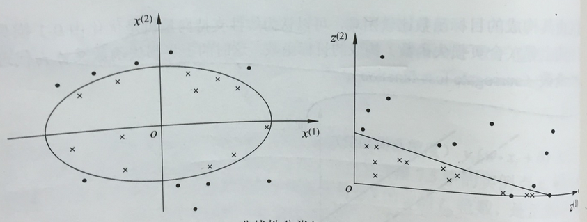

如果分类问题是非线性的，那么就要用到非线性支持向量机。非线性支持向量机主要特点就是利用核技巧。
核技巧
非线性分类问题
利用非线性模型才能很好地进行分类的问题，就是非线性分类问题。如果能用\(R^n\)中的一个超平面将正负例正确分开，则称这个问题为非线性可分问题。如下的例子，无法用直线（线性模型）将正负实例正确分开，但可以用一条椭圆（非线性模型）将它们正确分开。

通常进行一个非线性变换，将非线性问题变换为线性问题，通过解变换后的线性问题的方法求解原来的非线性问题。例如，上图中将椭圆变换为右图中的直线，将非线性分类问题变换为线性分类问题。
核技巧应用到支持向量机，其基本思想就是通过一个非线性变换将输入空间（欧氏空间\(R^n\)或离散集合）对应于一个特征空间（希尔伯特空间1H），使得在输入空间中的超平面模型对应于特征空间中的超平面模型（支持向量机）。这样，分类问题的学习任务通过在特征空间中求解线性支持向量机就可以完成。
核函数的定义
设\(\chi\)是输入空间（欧氏空间\(R^n\)的子集或离散集合），\(H\)为特征空间（希尔伯特空间），如果存在一个从\(\chi\)到\(H\)的映射：
使得所有\(x,z \in \chi\)，函数K(x,z)满足条件：
则称\(K(x,z)\)为核函数，\(\phi(x)\)为映射函数。
核技巧的想法是，在学习与预测中只定义核函数\(K(x,z)\)，而不是显式地定义映射函数\(\phi\)。通常，直接计算\(K(x,z)\)比较容易，而通过\(\phi(x)\)和\(\phi(z)\)计算\(K(x,z)\)不容易。对于给定的核\(K(x,z)\)，特征空间和映射函数的取法并不唯一。
核技巧在SVM中的应用
我们注意到在线性支持向量机的对偶问题中，无论是目标函数还是决策函数（分离超平面）都只涉及输入实例与实例之间的内积。
因此，上式的目标函数中的内积\(x_ix_j\)可以用核函数\(K(x_i,x_j)=\phi(x).\phi(j)\)来代替，这时对偶问题的目标函数就变为：
同样，分类决策函数中的内积也可以用核函数代替：
也就是说，在核函数\(K(x_i,x_j)\)给定的条件下，可以利用解线性分类问题的方法求解非线性分类问题的支持向量机。学习是隐式地在特征空间进行得，不需要显示地定义特征空间和映射函数。这样的技巧就称为核技巧。它是巧妙的利用线性分类学习方法与核函数解决非线性问题的技术。
在实际应用中，选择核函数往往依赖于领域知识直接选择核函数，核函数选择的有效性需要通过实验验证。
正定核
\(K(x,z)\)满足什么条件才能称为核函数呢？
通常，所说的核函数就是正定核函数（positive definite kernel function）。
依据函数\(K(x,z)\)，构成一个希尔伯特空间，其步骤是：
（1）定义映射\(\phi\)，构成向量空间S
先定义映射
根据这一映射，定义线性组合
考虑由线性组合为元素的集合S。
（2）在S上定义内积，使其成为内积空间
在S上定义一个运算\(*\)，证明运算\(*\)是S的内积，赋予内积的向量空间为内积空间。因此，S是一个内积空间2。
（3）将内积空间S完备化为希尔伯特空间
这一希尔伯特空间称为再生核希尔伯特空间，这是由于核K具有再生性，即满足
及
称为再生核。
（4）正定核的充要条件
设\(K: \chi \times \chi \rightarrow R\)是对称函数，则\(K(x,z)\)为正定核的充要条件是对任意\(x_i \in \chi, i=1,2,...,m\)，对\(K(x,z)\)对应的Gram矩阵3：
是半正定矩阵4。
所以如果一个函数K是核函数，那么其对应的核矩阵是对称的半正定矩阵。
证明： 必要性： 由于\(K(x,z)\)为\(\chi \times \chi\)上的正定核，所以存在从\(\chi\)到希尔伯特空间的映射\(\phi\)，使得
于是，对于任一\(x_1,x_2,...,x_m\)，构造K(x,z)关于\(x_1,x_2,...,x_m\)的Gram矩阵
对于任意的向量z，有
所以K(x,z)是半正定矩阵。
充分性： K(x,z)对任意\(x_i \in \chi, i=1,2,...,m\)，关于\(x_1,x_2,...,x_m\)的Gram矩阵是半正定的。对于给定的K(x,z)可以构造从\(\chi\)到某个希尔伯特空间的映射
可得
及
即得
表面K(x,z)是\(\chi \times \chi\)上的核函数。
核函数的另一定义：
设\(K(x,z)\)是定义在\(\chi \times \chi\) 上的对称函数，对任意\(x_i \in \chi, i=1,2,...,m\)，\(K(x,z)\)对应的Gram矩阵：
是半正定矩阵，则称\(K(x,z)\)是正定核。
对于一个具体函数\(K(x,z)\)检验它是否是正定核函数不容易，因为要求对任意的输入集\(x_i \in \chi, i=1,2,...,m\)，验证\(K(x,z)\)对应的Gram矩阵是否为半定的。在实际问题中往往使用已有的核函数。
常用核函数
（1）多项式核函数
分类决策函数成为：
（2）高斯核函数
对应的支持向量机是高斯径向基函数（radial basis function）分类器。 分类决策函数成为：
非线性支持向量机分类机
非线性支持向量机的学习算法：
输入：训练数据集T
输出：分类决策函数
（1）选取适当的核函数\(K(x,z)\)和适当的参数C，构造并求解约束最优化问题
求得最优解\(\alpha^* = (\alpha_1^* ... \alpha_n^*)^T\)
（2）选择一个\(0 < \alpha_j^* < C\)，计算
（3）构造分类决策函数：
Reference
统计学习方法第七章
-
希尔伯特空间又叫完备的内积空间，是有限维欧几里得空间的一个推广，使之不局限于实的情形和有限的维数，但又不失完备性。在一个复数向量空间H上的给定的内积<.,.>可以按照如下的方式导出一个范数（norm）
 此空间称为是一个希尔伯特空间 ↩
此空间称为是一个希尔伯特空间 ↩ -
是指内积空间中的一组向量之间的内积构成的矩阵
 ↩
↩ -
一个n×n的实对称矩阵M是正定的，当且仅当对于所有的非零实系数向量z，都有\(z^TMz > 0\)。 M是半正定矩阵当且仅当对所有不为零\(的x \in \mathbb{R}^n\)（或 \(x \in \mathbb{C}^n\)），都有：\(x^{*} M x \geq 0\) 若 M 为半正定阵，可以写作\(M \geq 0\) 。如果 M 是正定阵，可以写作 \(M > 0\) 。 ↩
Comments